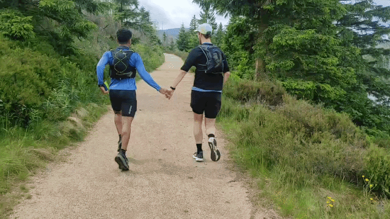

// das Geburtstagsduo, wie immer mitten im Abenteuer //
Party-Details:
| 📍 Ort |
Flux Teerhof 20D 28199 Bremen-Neustadt 🗺️ In Google Maps öffnen |
|---|---|
| 🕖 Datum & Uhrzeit |
Samstag, 13. März 2027 19:00 – 1:00 Uhr 📅 Zum Kalender hinzufügen |
| 🎁 Geschenke |
BITTE KEINE GESCHENKE! Das größte Geschenk ist, mit euch zu feiern. 💝
Falls ihr unbedingt Geld ausgeben wollt: Es gibt eine Spendenbox auf der Party —
teils um die Kosten des Abends mitzutragen, teils als Spende an
Flüchtlingsrat Bremen und Sea-Watch e.V.
|
| 🍹 Essen & Trinken |
Die Getränke übernehmen wir! 🍾 Wenn ihr etwas mitbringen möchtet, freuen wir uns über veganes Fingerfood oder veganen Kuchen. 🌱🎂 |
| 👗 Kleiderordnung |
MODESTATEMENTS! Seid frei in eurer Wahl ;) Etwas, das an euer Hobby, eure Kultur oder eure Interessen erinnert, oder einfach etwas, das ihr liebt, aber selten tragen könnt — oder einfach eine Latzhose! Garantiertes Eisbrecher-Material. |
| 🎵 Musik | Wir werden Musik spielen — schräge Musik, experimentelle Musik, gute Musik, epische Songs — und es besteht die Gefahr, dass ihr mitsingen müsst. 🎤 |
Zusage:
Probleme? Schreib uns direkt an bambozya+party@gmail.com